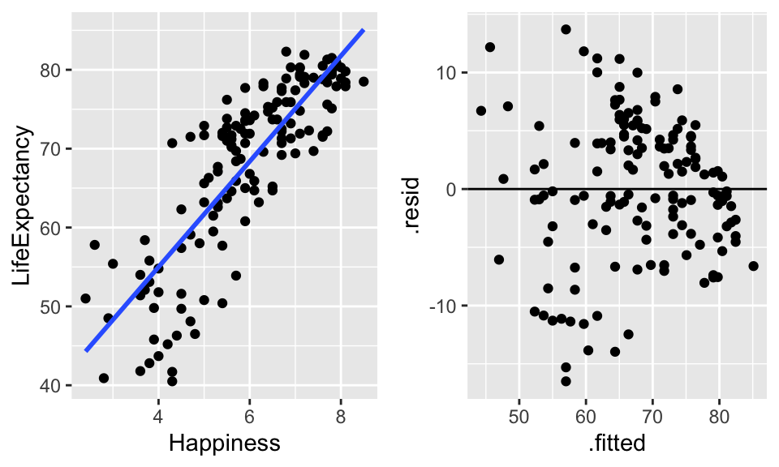

Chapter 3 Simple Linear Regression
Though we’ve discussed the relationship between tests of means and simple linear regression, we will really consider simple linear regression in a much broader context (one where both the explanatory and response variables are quantitative).
The data below represents 10 different variables on health of a country measured on 143 countries. Data taken from (Lock et al. 2016), originally from the Happy Planet Index Project [http://www.happyplanetindex.org/]. Region of the world is coded as 1 = Latin America, 2 = Western nations, 3 = Middle East, 4 = Sub-Saharan Africa, 5 = South Asia, 6 = East Asia, 7 = former Communist countries. We are going to investigate happiness and life expectancy.
3.1 Transformations
Model assumptions
- The average value for the response variable is a linear function of the explanatory variable.
- The error terms follow a normal distribution around the linear model.
- The error terms have a mean of zero.
- The error terms have a constant variance of \(\sigma^2\).
- The error terms are independent (and identically distributed).
- [http://www.rossmanchance.com/applets/RegSim/RegCoeff.html]
How do we tell whether the assumptions are met? We can’t always. But it’s good to look at plots: scatter plot, residual plot, histograms of residuals. We denote the residuals for this model as:
\[\begin{align} r_i = \hat{e}_i = y_i - \hat{y}_i \end{align}\]
Figs 3.13 and 3.15 taken from Kutner et al. (2004)
important note!! The idea behind transformations is to make the model as appropriate as possible for the data at hand. We want to find the correct linear model; we want our assumptions to hold. We are not trying to find the most significant model or big \(R^2\).
See section 2.9 in your text. No normal probability plots (qq-plots); use histograms or boxplots to assess the symmetry and normality of the residuals.
3.2 Fitting the regression line
How do we fit a regression line? Find \(b_0\) and \(b_1\) that minimize the sum of squared distance of the points to the line (called ordinary least squares):
\[\begin{align} \min \sum (y_i \hat{y}_i)^2 &=& \min RSS \mbox{ residual sum of squares}\\ RSS &=& \sum (y_i - b_0 - b_1 x_i)^2\\ \frac{\partial RSS}{\partial b_0} = 0\\ \frac{\partial RSS}{\partial b_1} = 0\\ b_0 &=& \overline{y} - b_1 \overline{x}\\ b_1 &=& r(x,y) \frac{s_x}{s_y}\\ \end{align}\]
- Is that the only way to find values for \(b_0\) and \(b_1\)? (absolute distances, maximum likelihood,…)
- Resistance to outliers?
- What is \(\hat{y}\) at \(\overline{x}\)?
\[\begin{align} \hat{y} &=& b_0 + b_1 \overline{x}\\ &=& \overline{y} - b_1 \overline{x} + b_1 \overline{x}\\ &=& \overline{y} \end{align}\]
The regression line will always pass through the point \((\overline{x}, \overline{y})\).
3.3 Correlation
Consider a scatterplot, you’ll have variability in both directions: \((x_i - \overline{x}) \& (y_i - \overline{y})\).
\[\begin{align} \mbox{sample covariance}&&\\ cov(x,y) &=& \frac{1}{n-1}\sum (x_i - \overline{x}) (y_i - \overline{y})\\ \mbox{sample correlation}&&\\ r(x,y) &=& \frac{cov(x,y)}{s_x s_y}\\ &=& \frac{\frac{1}{n-1} \sum (x_i - \overline{x}) (y_i - \overline{y})}{\sqrt{\frac{\sum(x_i - \overline{x})^2}{n-1} \frac{\sum(y_i - \overline{y})^2}{n-1}}}\\ \mbox{pop cov} &=& \sigma_{xy}\\ \mbox{pop cor} &=& \rho = \frac{\sigma_{xy}}{\sigma_x \sigma_y}\\ \end{align}\]
- \(-1 \leq r \leq 1 \& -1 \leq \rho \leq 1\).
- No Spearman’s rank correlation or Kendall’s \(\tau\).
- \(b_1 = r \frac{s_y}{s_x}\)
- if \(r=0, b_1=0\)
- if \(r=1, b_1 > 0\) but can be anything!
- \(r < 0 \leftrightarrow b < 0, r > 0 \leftrightarrow b > 0\)
- if \(r=0, b_1=0\)
- Recall that \(R^2\) is the proportion of variability explained by the line.
3.4 Errors
Recall, \(\epsilon_i \sim N(0, \sigma^2)\). How do we estimate \(\sigma^2\)?
\[\begin{align} RSS &=& \sum (y_i - \hat{y}_i)^2 \ \ \ \mbox{ residual sum of squares}\\ MSS &=& \sum (\hat{y}_i - \overline{y})^2 \ \ \ \mbox{ model sum of squares}\\ TSS &=& \sum (y_i - \overline{y})^2 \ \ \ \mbox{ total sum of squares}\\ s_{y|x}^2 &=& \hat{\sigma^2} = \frac{1}{n-2} RSS\\ s_x^2 &=& \frac{1}{n-1} \sum (x_i - \overline{x})^2\\ s_y^2 &=& \frac{1}{n-1} \sum (y_i - \overline{y})^2\\ var(\epsilon) &=& s_{y|x}^2 = \frac{RSS}{n-2} = \frac{\sum(y_i - \hat{y}_i)^2}{n-2} = SE(\epsilon)\\ var(b_1) &=& \frac{s_{y|x}^2}{(n-1) s_x^2}\\ SE(b_1) &=& \frac{s_{y|x}}{\sqrt{(n-1)} s_x}\\ &=& \frac{\hat{\sigma}}{\sqrt{\sum(x_i - \overline{x})^2}} = \frac{\sqrt{\sum(y_i - \hat{y}_i)^2/(n-2)}}{\sqrt{\sum(x_i - \overline{x})^2}}\\ \end{align}\]
- \(SE(b_1) \downarrow\) as \(\sigma \downarrow\)
- \(SE(b_1) \downarrow\) as \(n \uparrow\)
- \(SE(b_1) \downarrow\) as \(s_x \uparrow\)
- WHY?
- What do we mean by \(SE(b_1)\)?
As we saw above, the correlation and the slope estimates are intimately related. They are also both related to the coefficient of determination. \[\begin{align} R^2 = r^2 = \frac{MSS}{TSS} \end{align}\]
\(R^2\) is the proportion of total variability explained by the regression line (the linear relationship between the explanatory and response variables).
- If \(x\) and \(y\) are not at all correlated, \(\hat{y}_i \approx \overline{y}\), MSS = 0, \(R^2=0\).
- If \(x\) and \(y\) are perfectly correlated, \(\hat{y}_i = y_i\), MSS=TSS, \(R^2 = 1\).
3.4.1 Testing \(\beta_1\)
If \(H_0: \beta=0\) is true, then \[\begin{align} \frac{b_1 - 0}{SE(b_1)} \sim t_{n-2} \end{align}\] Note that the degrees of freedom are now \(n-2\) because we are estimating two parameters (\(\beta_0\) and \(\beta_1\)). We can also find a \((1-\alpha)100\%\) confidence interval for \(\beta_1\): \[\begin{align} b_1 \pm t_{\alpha/2, n-2} SE(b_1) \end{align}\]
3.5 Intervals
As with anything that has some type of standard error, we can create intervals that give us some confidence in the statements we are making.
3.5.1 Confidence Intervals
In general, confidence intervals are of the form:
point estimate +/- multiplier * SE(point estimate)3.5.2 Slope
We can create a CI for the slope parameter, \(\beta_1\): \[\begin{align} b_1 &\pm& t_{\alpha/2,n-2} SE(b_1)\\ b_1 &\pm& t_{\alpha/2, n-2} \frac{s_{y|x}}{\sqrt{(n-1)}s_x}\\ 6.693 &\pm& t_{.025, 141} 0.375\\ t_{.025,141} &=& qt(0.025, 141) = -1.977\\ \mbox{CI} && (5.95 \mbox{ years/unit of happy}, 7.43 \mbox{ years/unit of happy}) \end{align}\] How can we interpret the CI? Does it make sense to talk about a unit of happiness?
3.5.3 Mean Response
We can also create a CI for the mean response, \(E[Y|x^*] = \beta_0 + \beta_1 x^*\). Note that the standard error of the point estimate (\(\hat{y}=b_0 + b_1 x^*\)) now depends on the variability associated with two things (\(b_0, b_1\)). \[\begin{align} SE(\hat{y(x^*)}) &=& \sqrt{ \frac{s^2_{y|x}}{n} + (x^* - \overline{x})^2 SE(b_1)^2}\\ SE(\hat{y}(\overline{x})) &=& s_{y|x}/\sqrt{n}\\ SE(\hat{y}(x)) &\geq& s_{y|x}/\sqrt{n} \ \ \ \forall x \end{align}\] How would you interpret the associated interval?
3.5.4 Prediction of an Individual Response
As should be obvious, predicting an individual is more variable than predicting a mean.
\[\begin{align} SE(y(x^*)) &=& \sqrt{ \frac{s^2_{y|x}}{n} + (x^* - \overline{x})^2 SE(b_1)^2 + s^2_{y|x}}\\ SE(y(x^*)) &=& \sqrt{ SE(\hat{y}(x^*))^2 + s^2_{y|x}}\\ \end{align}\] How would you interpret the associated interval?
3.5.5 Outlying, High Leverage, and Influential Points
We are skipping the rest of this section in the notes. You are not responsible for it.
Read section 4.7 (no loess, ignore the multiple predictors part, )
Note: typically we think of more data as better; more values will tend to decrease the sampling variability of our statistic. But if I give you a lot more data and put it all at \(\overline{x}\), \(SE(b_1)\) stays exactly the same. Why??
Recall \[\begin{align} y_{i} &=& \beta_0 + \beta_1 x_i \ \ \ \epsilon_i \sim N(0,\sigma^2)\\ e_i &=& y_i - \hat{y}_i \end{align}\]
We plot \(e_i\) versus \(\hat{y}_i\). (Why? Typically, we want the \(e_i\) to be constant at each value of \(x_i\). Note that \(\hat{y}_i\) is a simple linear transformation of \(x_i\), so the plot is identical.) We want to see if the distributions of the residuals is different across the fitted line (we look for patterns).\
Not all residuals have an equal effect on the regression line!!
3.5.5.1 leverage
\[\begin{align} h_i = \frac{1}{n} +\frac{(x_i - \overline{x})^2}{\sum_{j=1}^n (x_j - \overline{x})^2}\\ \frac{1}{n} \leq h_i \leq 1\\ \end{align}\] Leverage represents the effect of point \(x_i\) on the line. We need large leverage for a particular value to have a large effect.
Note: \[\begin{align} SE(\hat{y}(x_i)) &=& s_{y|x} \sqrt{h_i}\\ SE(y(x_i)) &=& s_{y|x} \sqrt{(h_i + 1)}\\ SE(e_i) &=& s_{y|x} \sqrt{(1-h_i)}\\ \hat{y}(x^*) &\pm& t_{n-2, .025} (s_{y|x} \sqrt{h(x^*)+1})\\ \end{align}\] is a 95% prediction interval at \(x^*\). High leverage reduces the variability because the line gets pulled toward the point.
3.5.5.2 standardized residuals
\[\begin{align} \frac{e_i}{s_{y|x} \sqrt{1-h_i}} \sim t_{n-2}\\ \end{align}\]
3.5.5.3 studentized residuals
\[\begin{align} \frac{e_i}{s_{y|x, (i)} \sqrt{1-h_i}} &\sim& t_{n-3}\\ s_{y|x, (i)} &=& \frac{1}{n-3} \sum_{j \ne i} (y_j - \hat{y}_{j(i)})^2 \end{align}\]
Where do we predict 90% of residuals? \(\pm t_{n-2,3 , .05}\). About \(\pm 2\).
3.5.5.4 DFBETAs
DFBETAs represent the change in the parameter estimate due to one observation.
\[\begin{align} DFBETAS_i &=& \frac{b_1 - b_{1(i)}}{\frac{s_{y|x, (i)}}{\sqrt{(n-1)} s_x}}\\ \end{align}\]
3.6 R Example (SLR): Happy Planet
The data below represents 10 different variables on health of a country measured on 143 countries. Data taken from (Lock et al. 2016), originally from the Happy Planet Index Project [http://www.happyplanetindex.org/]. Region of the world is coded as 1 = Latin America, 2 = Western nations, 3 = Middle East, 4 = Sub-Saharan Africa, 5 = South Asia, 6 = East Asia, 7 = former Communist countries. We are going to investigate happiness and life expectancy.
3.6.1 Reading the data into R
happy <- read_delim("~/Dropbox/teaching/math150/spring17/happyPlanet.txt", delim="\t")
glimpse(happy) ## Observations: 143
## Variables: 11
## $ Country <chr> "Albania", "Algeria", "Angola", "Argentina", "Arm…
## $ Region <dbl> 7, 3, 4, 1, 7, 2, 2, 7, 5, 7, 2, 1, 4, 5, 1, 7, 4…
## $ Happiness <dbl> 5.5, 5.6, 4.3, 7.1, 5.0, 7.9, 7.8, 5.3, 5.3, 5.8,…
## $ LifeExpectancy <dbl> 76.2, 71.7, 41.7, 74.8, 71.7, 80.9, 79.4, 67.1, 6…
## $ Footprint <dbl> 2.2, 1.7, 0.9, 2.5, 1.4, 7.8, 5.0, 2.2, 0.6, 3.9,…
## $ HLY <dbl> 41.7, 40.1, 17.8, 53.4, 36.1, 63.7, 61.9, 35.4, 3…
## $ HPI <dbl> 47.91, 51.23, 26.78, 58.95, 48.28, 36.64, 47.69, …
## $ HPIRank <dbl> 54, 40, 130, 15, 48, 102, 57, 85, 31, 104, 64, 27…
## $ GDPperCapita <dbl> 5316, 7062, 2335, 14280, 4945, 31794, 33700, 5016…
## $ HDI <dbl> 0.801, 0.733, 0.446, 0.869, 0.775, 0.962, 0.948, …
## $ Population <dbl> 3.15, 32.85, 16.10, 38.75, 3.02, 20.40, 8.23, 8.3…3.6.2 Running the linear model (lm)
## # A tibble: 2 x 5
## term estimate std.error statistic p.value
## <chr> <dbl> <dbl> <dbl> <dbl>
## 1 (Intercept) 28.2 2.28 12.4 2.76e-24
## 2 Happiness 6.69 0.375 17.8 5.78e-383.6.3 Ouptut
Some analyses will need the residuals, fitted values, or coefficients individually.
## # A tibble: 143 x 9
## LifeExpectancy Happiness .fitted .se.fit .resid .hat .sigma .cooksd
## <dbl> <dbl> <dbl> <dbl> <dbl> <dbl> <dbl> <dbl>
## 1 76.2 5.5 65.0 0.537 11.2 0.00765 6.09 1.28e-2
## 2 71.7 5.6 65.7 0.527 6.00 0.00737 6.14 3.57e-3
## 3 41.7 4.3 57.0 0.796 -15.3 0.0168 6.02 5.39e-2
## 4 74.8 7.1 75.7 0.678 -0.944 0.0122 6.16 1.48e-4
## 5 71.7 5 61.7 0.619 10.0 0.0101 6.10 1.38e-2
## 6 80.9 7.9 81.1 0.904 -0.198 0.0216 6.16 1.18e-5
## 7 79.4 7.8 80.4 0.873 -1.03 0.0202 6.16 2.95e-4
## 8 67.1 5.3 63.7 0.564 3.40 0.00842 6.16 1.32e-3
## 9 63.1 5.3 63.7 0.564 -0.596 0.00842 6.16 4.04e-5
## 10 68.7 5.8 67.0 0.515 1.66 0.00705 6.16 2.60e-4
## # … with 133 more rows, and 1 more variable: .std.resid <dbl>We can plot the main relationship, or we can plot the residuals (to check that technical conditions hold):
ggplot(happy, aes(x=Happiness, y=LifeExpectancy)) + geom_point() +
geom_smooth(method="lm", se=FALSE)
happy.lm %>% augment %>% ggplot(aes(x = .fitted, y = .resid)) + geom_point() +
geom_hline(yintercept=0)
Intervals of interest: mean response, individual response, and parameter(s).
## fit lwr upr
## 1 54.99531 53.24675 56.74387
## 2 75.07444 73.78057 76.36830## fit lwr upr
## 1 54.99531 42.72945 67.26117
## 2 75.07444 62.86510 87.28377## # A tibble: 2 x 7
## term estimate std.error statistic p.value conf.low conf.high
## <chr> <dbl> <dbl> <dbl> <dbl> <dbl> <dbl>
## 1 (Intercept) 28.2 2.28 12.4 2.76e-24 23.7 32.7
## 2 Happiness 6.69 0.375 17.8 5.78e-38 5.95 7.433.6.3.1 Residuals in R
We skipped the residuals section, so you are not responsible for finding residuals in R, but the R code is here for completion in case you are interested:
## # A tibble: 143 x 9
## LifeExpectancy Happiness .fitted .se.fit .resid .hat .sigma .cooksd
## <dbl> <dbl> <dbl> <dbl> <dbl> <dbl> <dbl> <dbl>
## 1 76.2 5.5 65.0 0.537 11.2 0.00765 6.09 1.28e-2
## 2 71.7 5.6 65.7 0.527 6.00 0.00737 6.14 3.57e-3
## 3 41.7 4.3 57.0 0.796 -15.3 0.0168 6.02 5.39e-2
## 4 74.8 7.1 75.7 0.678 -0.944 0.0122 6.16 1.48e-4
## 5 71.7 5 61.7 0.619 10.0 0.0101 6.10 1.38e-2
## 6 80.9 7.9 81.1 0.904 -0.198 0.0216 6.16 1.18e-5
## 7 79.4 7.8 80.4 0.873 -1.03 0.0202 6.16 2.95e-4
## 8 67.1 5.3 63.7 0.564 3.40 0.00842 6.16 1.32e-3
## 9 63.1 5.3 63.7 0.564 -0.596 0.00842 6.16 4.04e-5
## 10 68.7 5.8 67.0 0.515 1.66 0.00705 6.16 2.60e-4
## # … with 133 more rows, and 1 more variable: .std.resid <dbl>References
Kutner, Nachtsheim, Neter, and Li. 2004. Applied Linear Statistical Models. 5th ed. McGraw-Hill.
Lock, R., P.F. Lock, K. Lock Morgan, E. Lock, and D. Lock. 2016. Unlocking the Power of Data. Wiley. http://www.lock5stat.com/StatKey/.